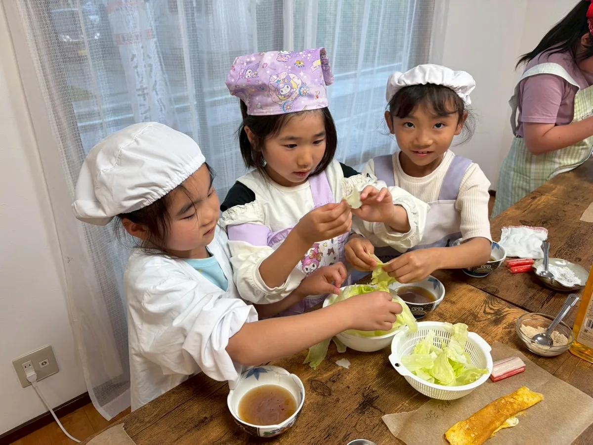
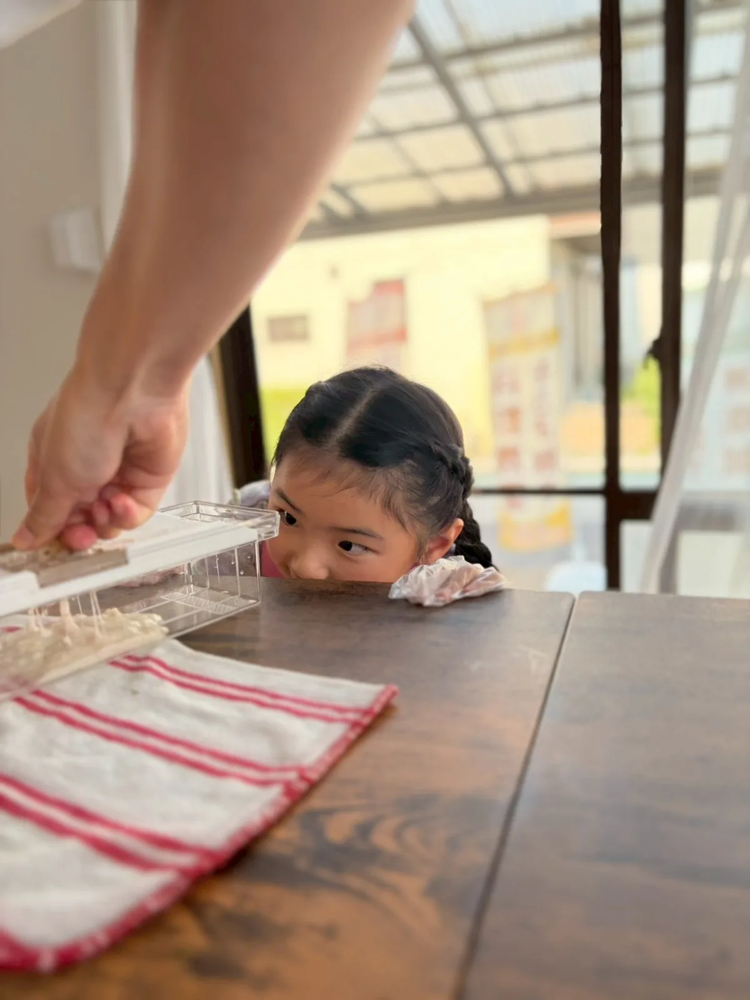
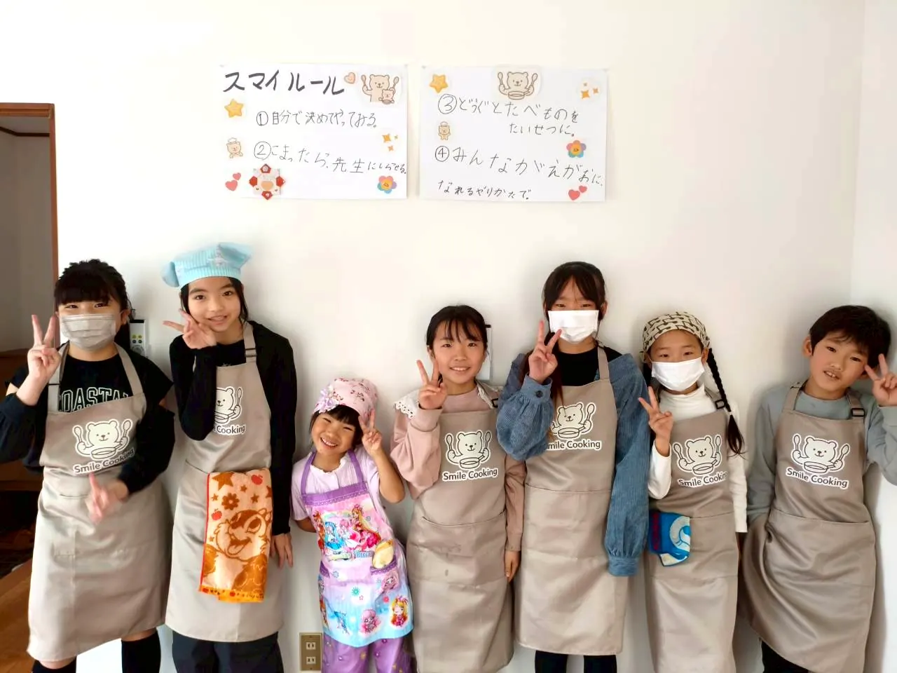
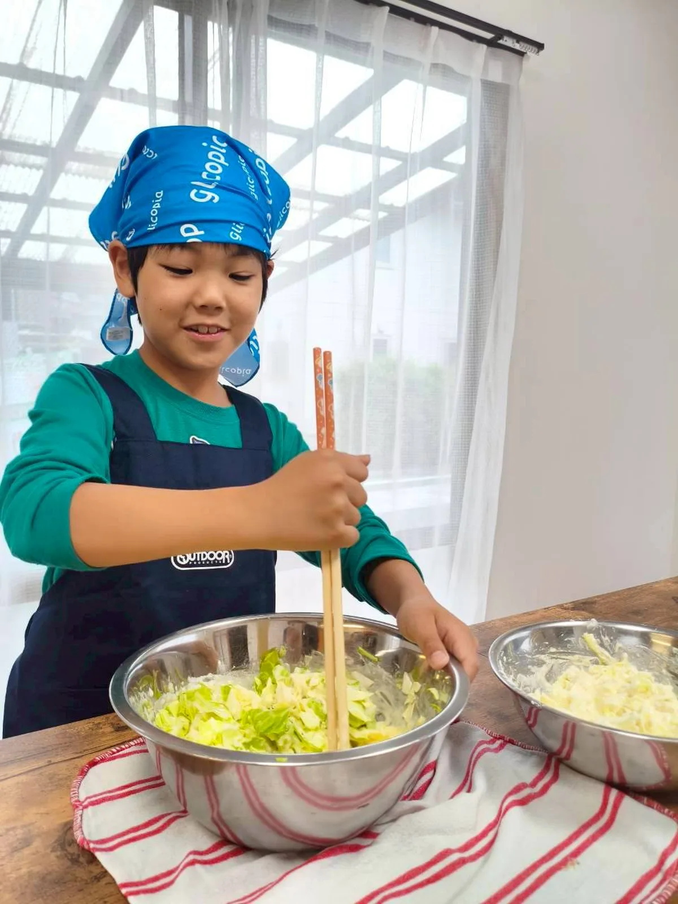
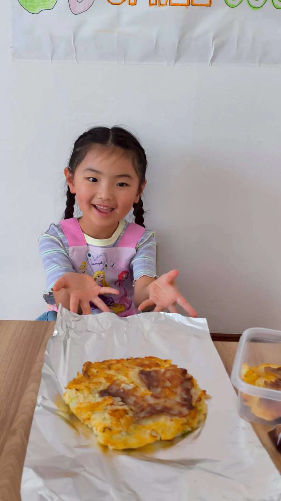
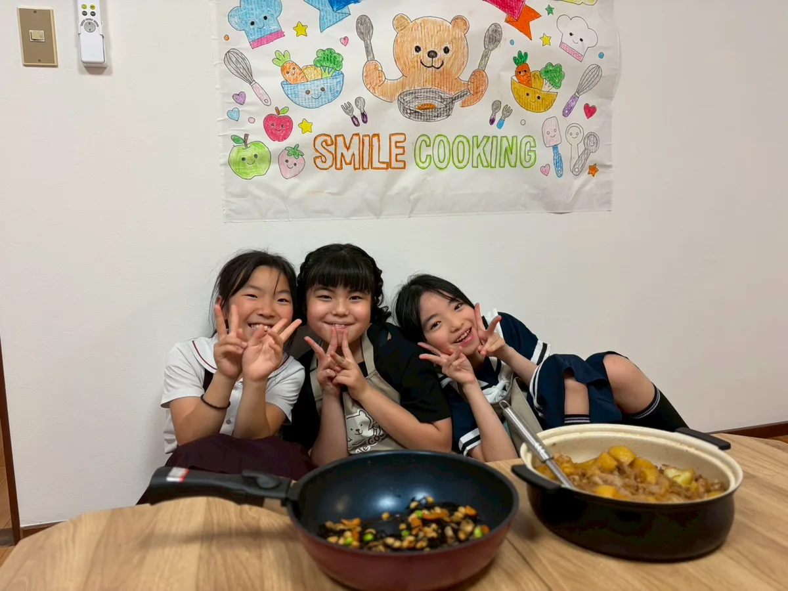
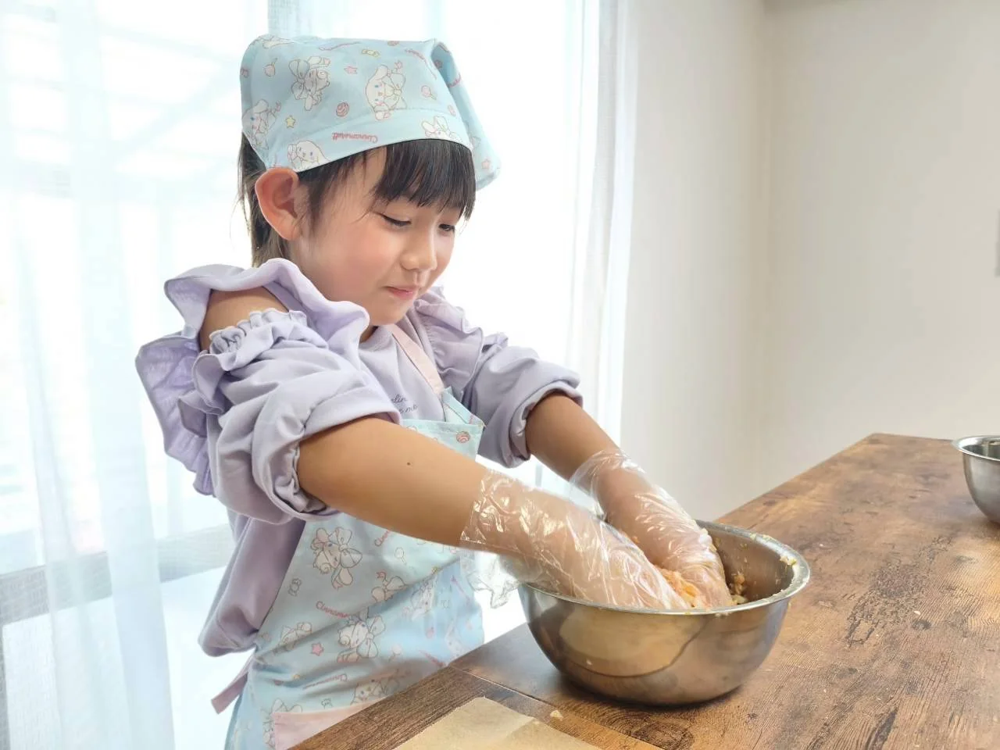
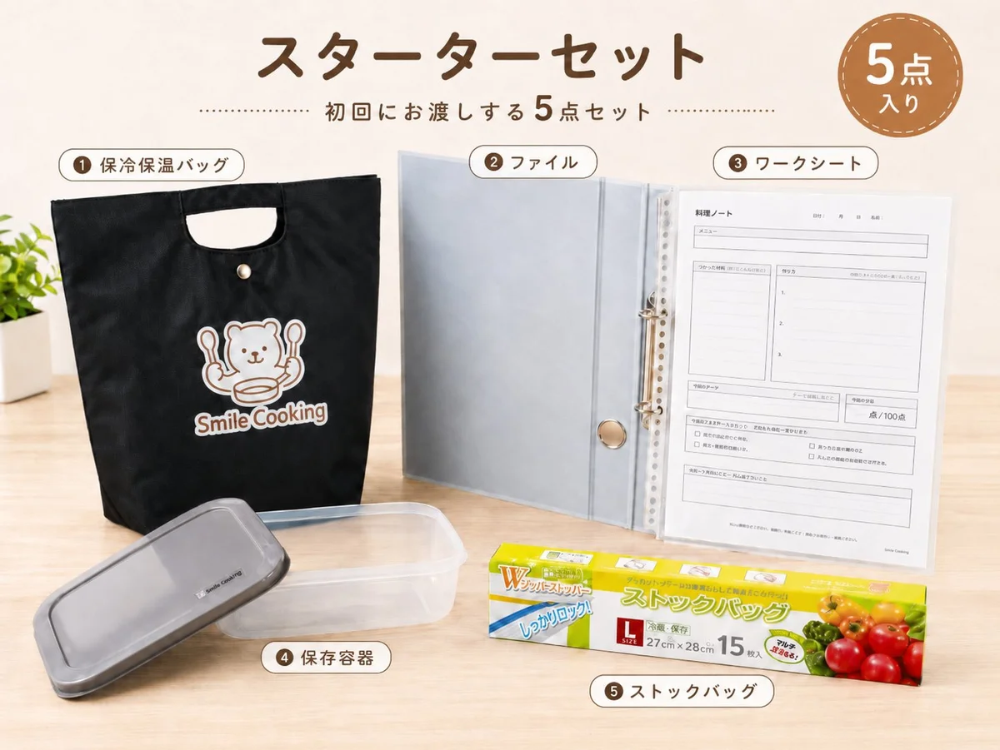

Gallery
レッスンの様子







料理は手段です。
月2回、前半・後半でメニューを変えながら、切る・焼く・煮るなどの基本を少しずつ積み重ねます。

※学童保育・一時預かりではありません。学校へのお迎え・宿題指導・延長保育は行っていません。
本当はもっと任せたい。でも夕方は、宿題・ごはん・お風呂・明日の準備で、ママにも余裕がなくなりやすい時間。
小学生の夕方は、なんとなく過ぎていきやすい時間でもあります。
家で全部やらせてあげなくても大丈夫。スマイルクッキングで、自分で考え、手を動かし、家族の役に立てる経験を積み重ねていきます。
必要なのは、毎日がんばることではなく、子どもに任せられる場を持つこと。
基本はお席を確保するクラブ参加。空きがある日は単発参加もできます。
毎月テーマを決め、月の前半・後半でメニューを変えながら進めます。切る・焼く・煮るなどの基本にくり返し触れ、段取りや判断する力も積み上げていきます。
家では任せきれないことも、ここでは子ども自身の経験に変えていく。「料理ができる子」ではなく、「自分で考えて動ける子」を育てるための習い事です。
毎月、前半・後半で違う料理に挑戦します。作ったものは、その日の夕飯に並べられます。
※メニューは月ごとに変わります。最新の内容はInstagram・公式LINEでお知らせします。
「この曜日は、子どもが夕飯に並ぶ料理を作って帰ってくる日」として生活に組み込めます。続けることで、作業ではなく“考えて動く力”が育っていきます。
まず一度参加してみたい方へ。空き枠がある日にご参加いただけます。
初回レッスンの日に、5点セットをお渡しします。

① クマの保冷保温バッグ ② ファイル ③ ワークシート
④ 保存容器 ⑤ ストックバッグ
作った料理の持ち帰りも、毎回のレッスン記録も、初日からこのセットひとつで始められます。
最初は単発で試していただき、「合いそう」と感じたらクラブ参加へ。無理なく始めながら、続ける価値も感じていただける設計です。
どの月からでも参加できます。毎月テーマが変わるので、単発でも楽しめて、続けるほど料理のきほんと考える力が積み上がります。
4月始まりでなくてもOKです。参加した月から、その子の1年が始まります。毎月のテーマは親子レッスンとも共通です。






家では夕方がバタバタして、やらせてあげたい気持ちはあっても「もうママがやるね」となりがちでした。レッスンでは自分で考えて作って帰ってくるので、本人の自信が目に見えて増えています。
料理の習い事ってどうなんだろうと思っていましたが、段取りを考えたり、焼き加減を見たり、家族に渡すところまで経験できるのがいいです。家でも「次はこれ手伝う」と言うようになりました。
作った料理を持ち帰って、家族に説明しながら出してくれるのが嬉しいです。料理が上手になるだけでなく、任される経験や、家族の役に立つ実感につながっていると感じます。
はじめての方は、通常レッスンに混ざって初回2,500円でお試しできます。
続けたくなったら、単発でもクラブ（月額）でも。通い方はあとから選べます。
クラブのご入会は専用フォーム、空き状況のご相談はLINEでどうぞ。
「うちの子に合うかな？」という相談だけでも大丈夫です。